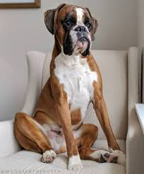
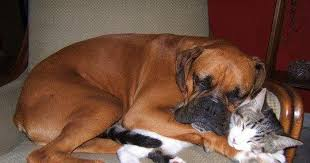
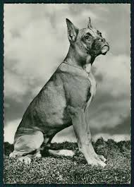

Males grow to about 25 inches and weigh from about 65 to 80 pounds (30 to 36 kilograms); females grow from about 21 to 25 inches and weigh from about 50 to 65 pounds (22 to 30 kilograms). Boxers have regal, distinctly shaped square heads. Their jaw is undershot and the muzzle blunt. They have a broad, deep chest and a relatively short, strong back. Boxer's ears fold over naturally, but traditionally, their ears have been cropped to stand erect. Their tails generally are docked and carried high. Their feet are compact and the toes are arched. The boxer's coat is short and sheds moderately. Some boxers are a rich, fawn color and others are brindle. Their face or mask is usually black, but many have white face markings and white on the chest and paws.
Boxers are intelligent, high-energy, playful dogs that like to stay busy. Their temperament reflects their breeding. They prefer to be in the company of their owners and are loyal pets that will fiercely guard their family and home against strangers. Few boxers bark excessively. If a boxer barks, chances are there is a good reason. Many boxers are vocal, however, and make a growling noise that's really just the dog's way of talking.
The boxer has a high need for companionship and exercise. If these needs are not met, boxers can be destructive if left alone in the house. Boxers are ideal for people who want a canine companion with them most of the time or for larger busy families with homes that are often occupied by someone. They can do well on a country estate or in a city apartment as long as they have the opportunity to romp and expel energy. If you live in an urban area, regular walks are necessary. Boxers are intolerant of hot weather, and care must be taken to prevent them from getting overheated. They also need protection from the cold since they are short-coated. Their coats, however, are very easy to care for and will be shiny and bright as long as they have a good diet, are bathed occasionally, and are given regular rub-downs with a grooming mitt or brushings with a rubber curry. Some boxers drool excessively, and some snort and snore. Like other larger dogs, boxers are not particularly long-lived. Their life expectancy ranges from about seven to 10 years.
Boxers are descendants of extinct bullenbaiser breeds crossed with mastiff, bulldog and possibly Great Dane and even a terrier. They were developed in Germany in the 19th century, initially as bull baiting dogs and later as butcher's helpers, controlling cattle in slaughterhouses. Some breed historians say boxers are named from the German word boxl, their slaughterhouse designation. Other fanciers contend the name boxer comes from the characteristic way that they use their forepaws to play, sparring much like a human boxer. Boxers were not imported to the United States until after World War I. After 1940 the breed rose to become among the most popular in America. Boxers are considered working dogs. They were one of the first breeds employed as a police dog, and they have been used as seeing-eye dogs. But they are also bred to be companion and guard dogs, perhaps best known for being loyal family pets that are especially fond of children.